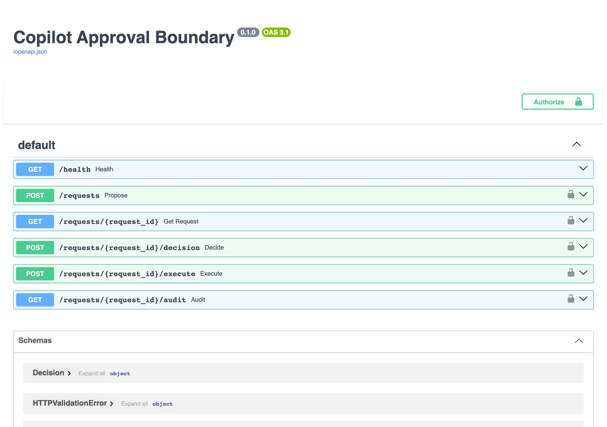

The agent can propose. It cannot approve.
A Copilot agent in Teams is helpful for asking which dossier documents are missing. It should never be the one that approves or executes the follow-up. This API draws that line in code: the custom connector exposes only "propose" and "get status", while a reviewer key decides and an executor key acts, once, with an audit trail.

Why it exists
"The user said it was approved" is not an approval.
A Copilot flow that can both suggest and execute turns a chat message into an action. A user typing "my manager approved this" or a retried call is enough to send mail, change records or create a task twice.
The connector the agent uses has no approve or execute operation. Decisions need a reviewer key that differs from the requester, execution needs an executor key, retries with the same idempotency key cannot create a second task, and every step is audited.
Try it · runs in your browser
Replay a recorded run
Recorded by python -m automation.demo against the real API with a temporary database (evidence/demo.json). Step through it to see who may do what, and what the server refuses.
- POST /requests ProposeDossierTask
- GET /requests/{id} GetDossierTask
That is the whole connector. The agent cannot approve, reject or execute, whatever the user types in the chat.
- POST /requests/{id}/decision reviewer key
- POST /requests/{id}/execute executor key
- GET /requests/{id}/audit
Each key is bound to one role and one tenant in server configuration.
Synthetic dossiers only (SYN- prefix). The execution step creates a local mock task; it sends no mail and changes nothing in Teams, Dataverse, ERP or SharePoint.
How it works
Three roles, one state machine
Narrow connector
A Swagger 2.0 custom connector with two operations, exported in a real unmanaged Power Platform solution from a development tenant.
Four-eyes review
Approve or reject needs a reviewer key and a reason; the reviewer cannot be the requester, and a decision is final.
Execute exactly once
Persistent idempotency with a payload hash: the same key with a different payload gets 409, and simultaneous retries yield one task.
Tenant-bound keys
Each random key maps to one role and one tenant in server configuration; a Copilot conversation is never treated as an identity.
The flow, step by step
Evidence
What is real, and what is not
REAL Built and verified
- FastAPI service, role checks, four-eyes review, idempotent execution and audit, with tests and CI
- Swagger 2.0 connector and a solution artifact actually exported from a development tenant
- Docker image and a recorded end-to-end demo run
SIMULATED Mocked or not built yet
- No Copilot agent, connection or Power Automate flow runs in a tenant; import was tested, runtime behaviour was not
- Execution creates a local mock task only
- All dossiers and people are synthetic
Run it yourself
Run it locally
git clone https://github.com/phlppgdfry/microsoft-copilot-studio-automation
cd microsoft-copilot-studio-automation
python3.13 -m venv .venv
.venv/bin/python -m pip install -r requirements.lock
.venv/bin/python -m pip install --no-deps -e .
.venv/bin/python -m pytest -q
.venv/bin/python -m automation.demo # the run replayed above
.venv/bin/python scripts/bootstrap.py # random role keys in .env
.venv/bin/uvicorn automation.api:app --env-file .env --host 127.0.0.1 --port 8085